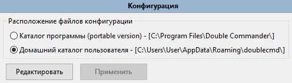

Файл doublecmd.xml может быть расположен в разных местах:
Подробнее узнать про параметр командной строки --config-dir можно по этой ссылке.
Расположение задаётся в настройках: Настройки > Параметры > выбираем в дереве  > устанавливаем параметр Месторасположение файлов конфигурации.
> устанавливаем параметр Месторасположение файлов конфигурации.

Ещё один способ быстро выяснить, где находится doublecmd.xml текущего экземпляра Double Commander, это использовать меню избранных каталогов. В конце его имеется дополнительный раздел под названием "Специальные каталоги", далее выбираем "Каталог Double Commander..." и "%DC_CONFIG_PATH%". Здесь мы найдём doublecmd.xml, который приложение использует в данный момент.

Подавляющее большинство параметров Double Commander может быть изменено через интерфейс приложения.
Мы просто нажимаем в главном меню Настройки > Параметры и получаем окно с настройками, разложенными по категориям.
Так что, как правило, нам не придётся вручную редактировать содержимое файла конфигурации.
Но есть несколько параметров, которые могут быть изменены только ручным редактированием doublecmd.xml.
ПРЕДУПРЕЖДЕНИЕ: Мы не будем редактировать файл пока Double Commander запущен! Не только потому, что в любом случае значения из него будут прочитаны только при запуске приложения, но и потому, что после закрытия DC наши изменения будут перезаписаны значениями текущей сессии. Если нужно изменить файл doublecmd.xml вручную, мы должны убедиться, что закрыли Double Commander, затем отредактировать файл и запустить приложение.
Таблица ниже содержит описание параметров, изменение которых возможно только вручную:
| Параметры, требующие изменения вручную | |||||||||||||||||||||
|---|---|---|---|---|---|---|---|---|---|---|---|---|---|---|---|---|---|---|---|---|---|
| Тег | Описание | ||||||||||||||||||||
<ActiveRight> в <Behaviours> |
При запуске Double Commander активной будет правая панель.
<ActiveRight>True</ActiveRight>
|
||||||||||||||||||||
<SingleClickStart> в <Behaviours><Mouse> |
Позволяет задать поведение при щелчке левой кнопки мыши по элементу списка файловой панели.
Если мы хотим... ...открывать папки и файлы одним щелчком: 1 + 0 = 1, тогда <SingleClickStart>1</SingleClickStart>...одним щелчком открывать только папки, для файлов использовать двойной: 2 + 0 = 2, тогда <SingleClickStart>2</SingleClickStart>...открывать папки и файлы одним щелчком, текстовый курсор не должен следовать за курсором мыши: 1 + 4 = 5, тогда <SingleClickStart>5</SingleClickStart>...одним щелчком открывать только папки, текстовый курсор не должен следовать за курсором мыши: 2 + 4 = 6, тогда <SingleClickStart>6</SingleClickStart> |
||||||||||||||||||||
<Quality> во всех тегах <Fonts> |
Задаёт тип растеризации шрифта. Другими словами, определяет качество шрифта. Есть много тегов <Font>, можно менять не для всей программы, а индивидуально.
<Quality>1</Quality>
| ||||||||||||||||||||
<gBorderFrameWidth> в <Colors> |
Мы можем настроить DC так, чтобы он рисовал рамку вокруг курсора. Параметр <gBorderFrameWidth> позволяет нам задать ширину линий. Чтобы включить курсор-рамку, мы должны перейти в Настройки > Параметры > Цвета > Файловые панели и отметить параметр Курсор-рамка. Пример: <gBorderFrameWidth>1</gBorderFrameWidth>
|
||||||||||||||||||||
<Info>, <Error> и <Success> в <Colors><LogWindow> |
Задают цвет текста в окне протокола для информационных сообщений, сообщений об ошибке и об успешной операции. Мы можем использовать код цвета в шестнадцатеричном виде в формате $BBGGRR. Например, выводить информационные сообщения синим цветом: <Info>$FF0000</Info> |
||||||||||||||||||||
<AutoSaveWidth> в <FilesViews><ColumnsView> |
Когда мы вручную с помощью мыши изменяем ширину колонки, по умолчанию DC применяет изменения для обеих панелей и сохраняет новое значение для последующих запусков. Если мы хотим отключить такое поведение и использовать изменения только в текущей сессии, то должны заменить True на False, т.е. использовать <AutoSaveWidth>False</AutoSaveWidth>. |
||||||||||||||||||||
<TitleStyle> в <FilesViews><ColumnsView> |
Изменение вида панели заголовков колонок. Значение по умолчанию зависит от ОС.
<TitleStyle>2</TitleStyle>
|
||||||||||||||||||||
<ExtraLineSpan> в <FilesViews> |
Параметр позволяет добавить несколько дополнительных пикселей по высоте для каждого элемента в файловых панелях. Значение задаётся непосредственно в пикселях. По умолчанию равно 2. Пример: <ExtraLineSpan>2</ExtraLineSpan>
|
||||||||||||||||||||
<FolderPrefix> и <FolderPostfix> в <FilesViews>(Версия 1.0.0 +) |
По умолчанию DC показывает квадратные скобки вокруг имён папок (это опциональный параметр в Список файлов > Список файлов (дополнительно)), но мы можем использовать вместо них любые символы. Примечание: В XML некоторые специальные символы зарезервированы как часть разметки и мы не можем использовать их как есть. Существует пять предопределённых сущностей: < должен быть записан как <, > как >, & как &, ' как ' и " как ".
|
||||||||||||||||||||
<NtfsHourTimeDelay> в <FileOperations> |
При сравнении даты и времени игнорировать разницу во времени ровно один час (при использовании внутренних команд cm_CompareDirectories или cm_SyncDirs). Это полезно при сравнении файлов и папок на разделе с NTFS и, например, с FAT32, поскольку метки времени на томах с NTFS меняются при переходе с летнего или на летнее время: т.е. файлы на NTFS идентичны файлам на разделе с FAT32, хотя мы явно видим один час разницы.
<NtfsHourTimeDelay>True</NtfsHourTimeDelay>
| ||||||||||||||||||||
<AutoExtractOpenMask> в <FileOperations> |
Предположим, мы "вошли" в сжатый файл в активной панели и просматриваем его содержимое. Файлы с расширением, заданным в этом параметре, при нажатии Enter или двойном щелчке мыши будут автоматически распакованы из архива и выполнены в соответствии с файловыми ассоциациями (вместо показа окна свойств). Пример: <AutoExtractOpenMask>*.txt;*.mp3;*.mp4</AutoExtractOpenMask> |
||||||||||||||||||||
<UseShellForFileOperations> (Версия <= 0.9.x) |
Использовать функцию переименования как в Explorer. Корректно работает с UAC.
<UseShellForFileOperations>True</UseShellForFileOperations>
|
||||||||||||||||||||
<Mode> в <AutoRefresh> |
Возможность удалить просматриваемые каталоги. "Просматриваемый каталог" — это каталог, на который Double Commander создаёт своего рода хук, поэтому может отслеживать любые изменения в нём. Таким образом, он может обновить отображаемое содержимое файловой панели, если оно изменилось. Этот параметр позволяет контролировать, как Double Commander будет реагировать на попытку удалить один из таких "просматриваемых каталогов" (даже в неактивной вкладке).
<Mode>1</Mode>
|
||||||||||||||||||||
<CustomIcons> в <Icons> |
Параметр определяет, какие значки будут использоваться для дисков, каталогов и архивов (только для Windows). Задаётся как сумма следующих значений:
Если мы хотим... ...все из системы: 0 + 0 + 0= 0, тогда <CustomIcons>0</CustomIcons>...все пользовательские: 1 + 2 + 4 = 7, тогда <CustomIcons>7</CustomIcons>...пользовательские для дисков, остальные из системы: 1 + 0 + 0 = 1, тогда <CustomIcons>1</CustomIcons>и т.д... Для пользовательских значков используются следующие ("XxX" — это размеры значков):
|
||||||||||||||||||||
<DiskAlpha> в <Icons> |
Задаёт уровень прозрачности для значков отмонтированных дисков.
|
||||||||||||||||||||
<ImageExifRotate> в <Viewer> |
Double Commander способен распознавать метаданные из EXIF, которые могут быть в файлах изображений JPEG. Среди метаданных есть флаг ориентации, который может быть использован для просмотра изображения в том положении, в котором оно было сделано: портрет, пейзаж, перевёрнутое, зеркальное и т.д. Тег ImageExifRotate определяет, будет ли Double Commander учитывать эту информацию при просмотре изображения или нет.
<ImageExifRotate>True</ImageExifRotate>
|
||||||||||||||||||||
<MaxTextWidth> в <Viewer> |
Установить максимальное количество символов в одной строке до принудительного переноса на новую. Диапазон значений от 80 до 16384, по умолчанию 1024. Пример: <MaxTextWidth>1024</MaxTextWidth>
|
||||||||||||||||||||
<TabSpaces> в <Viewer> |
Установить ширину табуляции во внутреннем просмотрщике. Диапазон значений от 1 до 32, по умолчанию 8. Пример: <TabSpaces>4</TabSpaces>
|
||||||||||||||||||||
<Added>, <Deleted> и <Modified> в <Differ><Colors>(Версия 1.0.0 +) |
Задают цвет для добавленных, удалённых и модифицированных строк во внутреннем инструменте сравнения файлов. Мы можем использовать код цвета в шестнадцатеричном виде в формате $BBGGRR, смотрите пример выше. |
||||||||||||||||||||
Атрибут Save в <SyncDirs><Asymmetric> |
Синхронизировать каталоги: сохранять или нет асимметричный режим по умолчанию. Если мы хотим сохранять состояние режима, тогда <Asymmetric Save="True">,
в противном случае <Asymmetric Save="False"> (по умолчанию). |
||||||||||||||||||||
<PathToLibrary> в <Lua> |
Путь к библиотеке Lua (необходима для использования скриптов Lua). Путь может быть относительным к исполняемому файлу Double Commander. Пример: <PathToLibrary>..\..\Other\dll\lua5.1.dll</PathToLibrary> |
||||||||||||||||||||